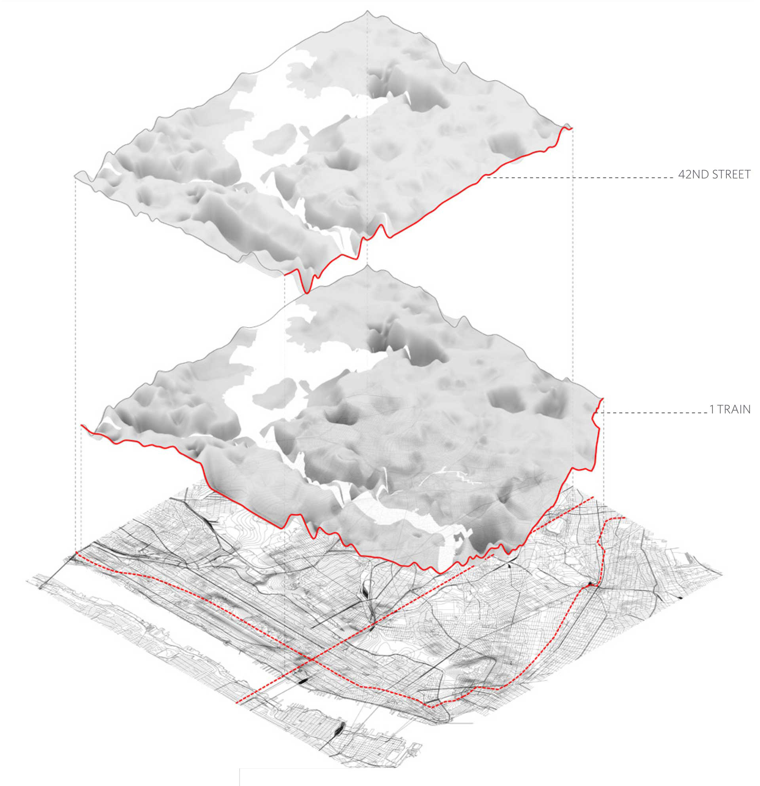

ABOUT THE PROJECT
Instructor: Eric Höweler
Team: Ben Halpern, Davis Owen, Scott Smith, Snoweria Zhang
GSD 4th semester, February 2015
NYC data collected from MapPLUTO
In his book World at Risk, sociologist Ulrich Beck argues, “risk represents the perceptual and cognitive schema in accordance with which a society mobilizes itself when it is confronted with the openness, uncertainties and obstructions of a self-created future and is no longer defined by religion, tradition or the superior power of nature but has even lost its faith in the redemptive powers of utopias.”
Modernity produced a cultural state in which technology and globalization have generated the risk of catastrophes that transcend socio-economic, political, and cultural borders. In the risk society, the built environment is the result of the negotiation of perceived threats to various stabilities. Here, we examine the ostensibly equitable ecological risk by taking into account income, age, and six other factors shown below; the resulting map (below) shows that although ecological risk affects all urban dwellers, not all are affected equally.
ECOLOGICAL RISK = (FLOOD ZONE) × (BUILDING AGE) × (POPULATION > 65) × (MEDIAN AGE)


HISTORIC RISK = (REAL ESTATE VALUE × POPULATION DENSITY) × [(HISTORIC DISTRICT + LANDMARK STATUS)] / 2
